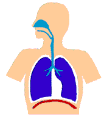

Under Construction
Under Construction
Peppermint Use to Assist in Asthma Control

Previous theoretical studies concerned with the effect of menthol on tobacco smoking
have reasoned that as a result of the pharmacological actions of the menthol found
in mentholated cigarettes, the early warning symptoms of respiratory distress caused
by continuous tobacco smoking may be masked (Garten and Falkner, Prev. Med. 37: 291-296, 2003).
The second paper (Garten and Falkner, Prev. Med. accepted for publication) has reasoned that as
a result of the menthol's inhibition on calcium-dependent processes (effects on sensory nerves and
smooth muscle) results in breath holding causing a greater opportunity for prolonged exposure to the contents
of the lung and greater opportunity for the transfer of the contents of the lung to the pulmonary circulation.
In case of the menthol smoker this action can result in greater exposure to nicotine and the numerous toxic substances
that are inhaled when smoking tobacco.
A brief background on peppermint and its active
ingredient, menthol:
Menthol, the world's second-largest used aromatic chemical, has so many uses that it would
be hard to find someone who could not make use of it. Recently, it has even been found that
just a few sniffs of menthol may enhance athletic performance because of possibly facilitating
increased oxygen uptake.
This unique compound has been widely used in pharmaceuticals, oral care, tobacco, confectionary
and perfumed products because of its pleasant taste and its association with freshness and cleanliness.
Besides being used for a flavoring agent (it has a very distinctive taste) or for its fragrance
(it has a very pleasant odor), pharmacological studies have uncovered a wide range of actions on living systems.
Menthol - Considering the Respiratory Tract:
Considering its effects on the respiratory system alone, menthol exerts actions as a decongestant,
as an antitussive, to act to increase the amount of soluble mucus in the respiratory tract promoting
airway clearance (bronchomucotropic) and as an expectorant. Menthol has also been used in treating the
inflammation found in chronic pulmonary disorders such as bronchial asthma. In vitro studies have shown
that menthol even possesses antibacterial and anti-allergic activity. Menthol has been used for years in
hundreds of medications for the temporary relief of coughs and minor sore throat irritations due to colds
or inhaled irritants. Even the Wrigley Company, of chewing gum fame, has recently released a cough-and-cold
menthol-flavored gum (Alpine) in Canada.
Asthma - its increased prevalence, morbidity, suffering and mortality - especially in children;
the effects of menthol:
The incidence of asthma, a chronic inflammatory disease of the respiratory airways, has doubled
in the last two decades. (For reasons that are not well understood the number of newly diagnosed
cases of asthma in the U.S. is rising sharply up 58.6% between 1982 and 1996.) In the United States
asthma affects around 20 million people and is responsible for approximately 5,000 deaths annually.
(Asthma deaths are climbing, 5434 in 1997 from 2598 in 1979.) Although African Americans make up less
than 13% of the U.S. population they account for nearly 22% of the deaths due to asthma. It is the most
common chronic disease of childhood affecting an estimated five million children.
Doctors are not exactly certain how a person gets asthma. But they do know that once acquired,
the lungs react to things that can start an asthma attack. For instance, when you have asthma,
you might get an asthma attack when you have a cold (or some other kind of respiratory infection).
Or, you might get an attack when you breathe something that bothers your lungs (such as cigarette smoke,
dust, dander, cold air or feathers). When this happens, three changes take place in your lungs: cells in your
air tubes make more mucus than normal. This mucus is very thick and sticky and tends to clog up the tubes. The
air tubes tend to swell, just as skin swells when you get a scrape. The muscles in your airway tubes tighten and
these changes cause the air tubes to narrow. This makes it hard to breathe. Asthma attacks my start suddenly.
Or they may take a long time, even days, to develop. Attacks can be severe, moderate or mild.
Moderate or mild attacks are more common. You start to feel tight in your chest. You might start coughing or you
might spit up mucus. You may feel restless or have trouble sleeping. You might make a wheezing or whistling sound
when you breathe. This can happen as you breathe air in and out of your narrowed air tubes.
Comparison Table - Symptoms of Asthma the Actions of Menthol
Medication Used in Asthmatic Control - in the
prevention of an asthmatic attack:
For most of the last century, culminating in the 1970s and early 1980s, asthma was understood to result
from over-responsiveness of the airway smooth muscle and treatment was directed at relieving symptoms by
reversing smooth muscle contraction.
(People with hypersensitive airways when exposed to certain irritants called triggers, such as household dust,
tobacco smoke, cat dander, cockroach droppings, air pollutants, even vigorous exercise or cold air would experience
bronchospasms - a narrowing of the airways caused by contraction of the muscles that encircle the bronchial tubes.)
Studies demonstrating bronchial hyper-responsive (an exaggerated tendency of the airways to contract in response to a
large number of nonspecific stimuli) were followed in the 1990s by studies demonstrating an association between bronchial
hyper-responsiveness and airway inflammation and confirming the presence of excessive numbers of inflammatory cells in the
airway of patients with mild, nearly asymptomatic asthma. This shifted the main focus away from bronchodilation
(relievers) toward anti-inflammatory therapy (controllers) to attempt to avoid asthmatic attacks.
A popular combination prescription product for prevention of an asthmatic attack marketed by Glaxo Smith Kline is
Advair (Seretide - outside the U.S.). It's promoted to target the two main things happening in an asthmatic's lungs
- constriction of the tightening of the muscles surrounding the airways and the inflammation, also the swelling and
the irritation of the airways. Together these two components can cause narrowing of the airways which result in the
symptoms as wheezing, coughing, chest tightness and shortness of breath.
Advair consists of a Fluticasone propionate ( Flixotide, Allen & Hanburys) an inhaled glucocorticosteroid
introduced for asthma prophylaxis in 1993 and salmeterol xinafoate (Serevent), a long-acting beta-2 adrenergic
bronchodilator approved in 1994.
Inhaled corticosteroid (ICS) therapy remains the gold standard of asthma treatment. This therapy is considered the
most effective long-term therapy available for mild, moderate or severe persistent asthma.
Being pharmacologists we have always looked negatively on the use of combination products mainly
because of the difficulty in being able to control the dosage of each component. But with drugs with a narrow
therapeutic range the administration in combination may be justified. Studies (Greenway et al. - need rest of
citation); Woodcock A et al., Comparison of addition of salmeterol to inhaled steroids with doubling the dose of
ICS, Am Rev Resp Crit Care Med 153: 1481-1488, 1996; Shrewsbury S et al., BMJ 320: 1368-1373, 2000.) have demonstrated
that the addition of salmeterol to a low or moderate dose of ICS was more effective at improving airway function and
asthma control than was doubling the dose of ICS. It is interesting to note that the combination of Fluticasone and
salmeterol provided more effective asthma control than low-dose ICS plus the anti-leukotriene agent - Montelukast.
Advair is not recommended for children under 12 years old.
Adverse Effects that May Occur with this Asthma Control Medication - related to the size of the dosage and
the length of time taking the medication:
There has been increasing concern in the Medical Literature about the safety of inhaled corticosteroids (ICS)
since many patients both adults and children, are increasingly prescribed these drugs for the long-term prophylactic
treatment of asthma. The goal to avoid adverse reactions is to use the lowest dose of inhaled corticosteroid
without much loss in efficacy (adjust downward to the lowest dose of ICS at which effective control of asthma
is maintained) With 20 million people in the U.S. living with asthma, adverse events related to asthma therapy
can greatly impact public health. Adverse events are more likely to occur with high doses of ICS, when inhaler
technique is poor and when the medication is taking for long periods of time.
Both the synthetic steroid and the bronchodilator have the potential to cause a number of different adverse reactions.
Summary Table of the Possible Side Effects Caused by
These Agents
As seen below the bronchodilator component salmeterol (Serevent) carries an additional warning.
August 15, 2003 a Black Box Warning was added to the product information for Serevent, Serevent Diskus,
Advair and Advair Diskus.
WARNING: Data from a large placebo-controlled US study that compared the safety of salmeterol
(SEREVENT Inhalation Aerosol)
or placebo added to ususal asthma therapy showed a small but significant increase in asthma-related
deaths in patients receiving salmeterol (13 deaths out of 13,174 patients treated for 28 weeks) versus
those on placebo (4 of 13,179). Subgroup analyses suggest the risk may be greater in African-American patients
compared to Caucasians (see WARNINGS and CLINICAL PHARMACOLOGY: Clinical Trials: Asthma: Salmeterol Multi-center
Asthma Research Trial).
Childhood growth and ICS - There are conflicting reports on whether asthma per se and steroid treatment does
impact on height obtained. in asthmatic children. It seems the younger the patient, the more the effect of the
drugs on growth velocity. In comparison with otherwise healthy children, those children with asthma tend to have a
later onset of puberty, slower pubertal growth velocity and a delayed bone maturation.. This is seen in children
with asthma whether they receive treatment with ICS or not. This growth retardation may be exaggerated if a child
is taking a corticosteroid. In a retrospective study to compare the adult height of children with asthma who received
steroid therapy with that of children who did not receive steroid therapy it was concluded that asthma per se and
steroid treatment of asthma do not have an impact on attained adult height (Silvertein et al. Attained adult height
after childhood asthma: effect of glucocorticoid therapy. J Allergy Clin Immunol 99: 466-474, 1997.)
Osteoporosis is one of the major complications of CS therapy. Other side effects include: bruising and skin thinning,
myopathic weakness of the adductor muscles of the vocal cords leading to pain in speaking, adrenal suppression, rarely
- bronchspasms related to the fluorocarbon carrier. Candida albicans infection of the mouth (esophageal candidiasis
is often recognized in bronchial asthmatic patients receiving long-term fluticasone propionate dry powder (Diskhaler)
inhalation. An Australian study found that the incidence of cataracts was doubled when using an ICS compared
with non-user patients. Also a Canadian study found high doses of ICS may cause glaucoma in patients 66 years
and older.
Adverse effects of beta2-adrenergic agonist salmeterol - most common - tremor, shakiness, irritability, insomnia
and headache.
Routine Use of Peppermint Oil containing Products - may allow for the lesser amounts of the asthma control
medication needed and the avoidance of any short or long-term side
effects from occurring:
There is no known cure but asthma can be well-controlled by a strategy aimed at preventing acute episodes from
occurring and halting those that do occur. Experts have concluded that the regular use of an inhaled steroid in
the prophylactic treatment of asthma is associated with a decreased risk of death. To avoid the potential risk
of an adverse event(s) every attempt should be made to find the lowest possible effective dose for prevention of
an asthma attack.
Paul Blanc and associates have found that self-treatment with non-prescription products by people with asthma is quite
common. Some of the products included: herbal products, coffee or black tea and OTC medications. The use of menthol
containing products was not considered.
Use of menthol (peppermint) may extend the effects of
asthmatic medication and thereby require less drug administration:
For example,Menthol having antibacterial activity may be helpful in avoiding a bacterial infection such as candidiasis
that may be seen with inhaled cortiocsteroid use that may occur in a small number of patients especially when a spacer
is not being used. Cepacol Sore Throat Lozenges [--] Eucalyptus/Menthol are promoted as an antibacterial lozenge
for the relief from sore throat and minor mouth infections.
The actions of menthol may be useful in allowing greater amounts of the asthmatic medication to get to sites
of action in the respiratory system and to assist in helping to relax bronchial musculature. Other useful actions
of menthol that may be useful are as a decongestant, as an antitussive, to aid in liquefying mucus
and an anti-inflammatory agent. Peppermint used properly is extremely safe with few side effects and
is considered by the FDA as Generally Recognized As Safe (GRAS). Menthol products should not be used
directly under the nose of small children or infants due to the risk of apnea.
Comparison Table - Symptoms of Asthma the Actions of Menthol
Inclusion of menthol (should be considered) in one of its many forms may allow for the reduction
of the dosage of the agents used in the prophylactic treatment of asthma resulting in more positive control
of asthma and the avoidance of adverse reactions and their
consequences:
A number of products have recently come on the market that contain peppermint. These include: Dentyne ICE,
Wrigley's Eclipse Polar Ice, Wrigley's Eclipse Pepperment, Altoid Curiously Strong Mint, Altoid Pepperiment,
Wrigley's Winter Fresh Thin Ice Strips, Barkley's Tastefully Intense Mints, Certs Cool Peppermint Drops,
Choward peppermint, Ricola Pearls Menthol, Tic Tac Silvers Peppermint
and many more.
See Related Module - Exercise-Induced
Asthma and the Use of Peppermint.
The experience of one of the Authors[Falkner]:
This author has had hayfever for 40+ years and smoked in various degrees over almost a 20 year period that
ended approximately 20 years ago (mostly pipe, cigars)-at this stage of life, the yearly hayfever exposure
has progressed to asthma-like symptoms that have been variously diagnosed, including a diagnosis of COPD.
The experience of this author confirms the above with the exception that ICS therapy was only involved for an
inconsequentially brief period. A nebulizer has been used (albuterol+ipratropium, usually once per day ) and an
inhaler with spacer has been used (same drug content-Combivent). The recommended use of the inhaler is two puffs,
four times a day, not to exceed eight puffs. This author uses it, doctor approved, one puff every 3-4 hours as needed
day or night.
The important point concerning the above recommendation regarding peppermint, is that in this author's experience,
peppermint or menthol preparations used in the form of chewing gums or candy/lozenges does help extend the required
period between dosage of nebulizer OR inhaler. Since the authors have been fully aware of this phenomenon, this author
has been experimenting with peppermint with more than satisfactory
results as per the above text. The use of peppermint
as a supplement to drug therapy has to be tried
to be fully appreciated.

 .
.